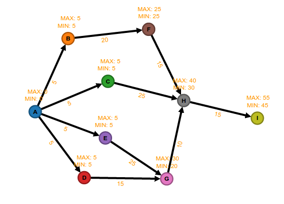

- The nodes are labeled;
- The edges are labeled;
- The edges are directed;
- Maximal and minimal value;
Make feel yourself confortable to conect the dots.
Graph.io provides the tool and you put your creativity and interpretation.
Project Management - PERT

Topological Structure

Network Structure
Options
Info
- Add node: Click the the editor area.
- Add edges: Click the source node and drag until target node.
- Drag node: Press key 'Ctrl' + cLick and press node and drag it.
- Remove node: Click the node and press key 'delete'.
- Remove edge: Click the edge and press key 'delete'.